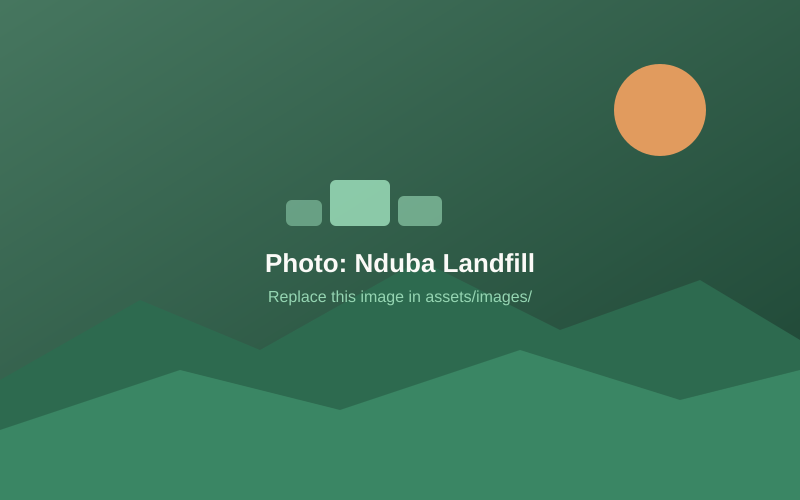

🏛️
Bold environmental policy
Rwanda banned plastic bags back in 2008 and has set a target of recycling 80% of domestic waste, with a compulsory waste sorting programme for all of Kigali paired with public education.
Every day, thousands of households and businesses in Kigali miss out on income from compost sales by not sorting their waste — because nothing in the system makes sorting possible, visible, or worthwhile.
According to the Global Green Growth Institute, organic waste makes up 70% of incoming waste at Nduba Landfill. Because organic waste is not sorted at the source, Rwanda's waste management system carries higher costs — and households and businesses lose the income that compost sales could bring them.
We aim to reduce this organic waste from 70% to 60% by 2036 by incentivizing households and businesses to sort compostable waste — connecting them to farmers and agricultural firms who will pay for it.

We traced the problem from the landfill gate back to the policy gap behind it.
Landfills in Kigali have poor waste management, receiving more waste than their facilities can handle.
The facility doesn't sort its trash into different categories.
It receives a lot of unsorted trash from households and businesses.
Most people only have access to one trash can.
The government has not provided a multi-bin system to residents for different kinds of trash.
There is no enforced policy or financial incentive to sort waste.
We interviewed households and business owners through structured interviews and a Google Forms survey. The findings reshaped our solution.
"There's not really much reason to sort waste at an individual level if I know it all ends up in the same place."
— Survey respondent, on futility
"When I'm out, like at school or in town, it's very easy to sort my trash because the division has already been done for me."
— Survey respondent, on infrastructure
"A lot of sorting campaigns tend to be fuzzy with what they do after collecting trash... that lack of trust hinders me."
— Survey respondent, on proof of impact
"If everyone does it, I would too."
— Survey respondent, on social norms
The takeaway: education alone won't change behavior. People need home sorting infrastructure, a trustworthy end-to-end system where sorted waste demonstrably stays sorted, and a financial reason to participate. Awareness ≠ action — convenience and incentives must come with it.
Our PESTLE analysis found strong tailwinds for a sorting-focused solution.
Rwanda banned plastic bags back in 2008 and has set a target of recycling 80% of domestic waste, with a compulsory waste sorting programme for all of Kigali paired with public education.
Kigali is fully privatising waste activities from collection to disposal through public-private partnerships — an open door for startups and social enterprises like EarthRise.
Rwanda's agriculture relies heavily on imported chemical fertilisers. Officials argue organic composting could cut those imports — a ready, motivated buyer market for sorted organic waste.
REMA is leading a $7M initiative for a sound waste management framework, and Nduba now hosts Rwanda's first Municipal Waste Valorization Facilities — but source-separation rules remain weakly enforced. That's the gap we fill.
Two products, one marketplace, and an income stream for everyone who sorts.